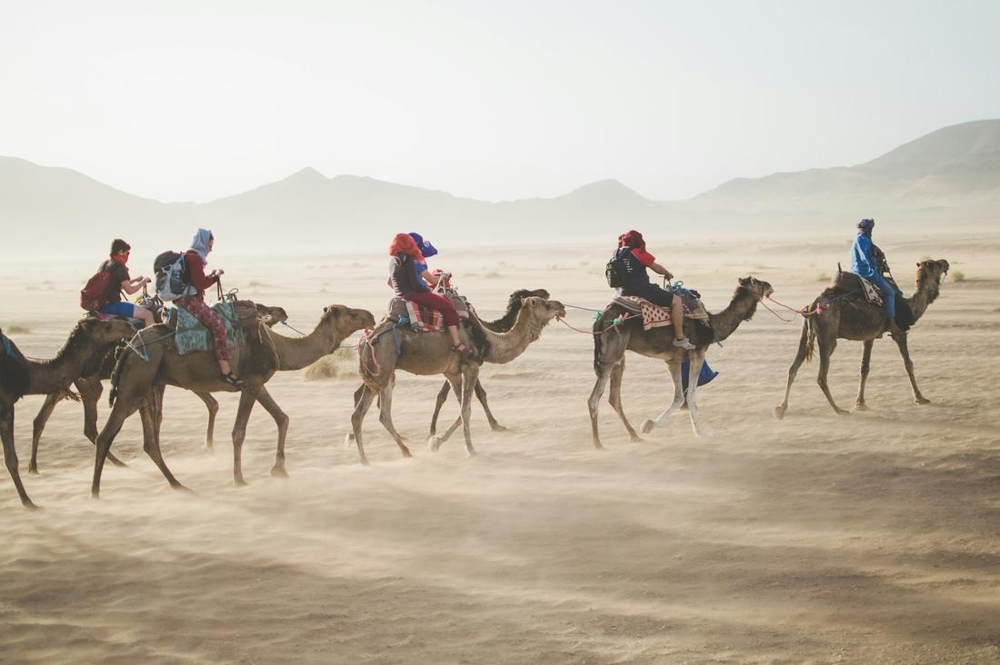
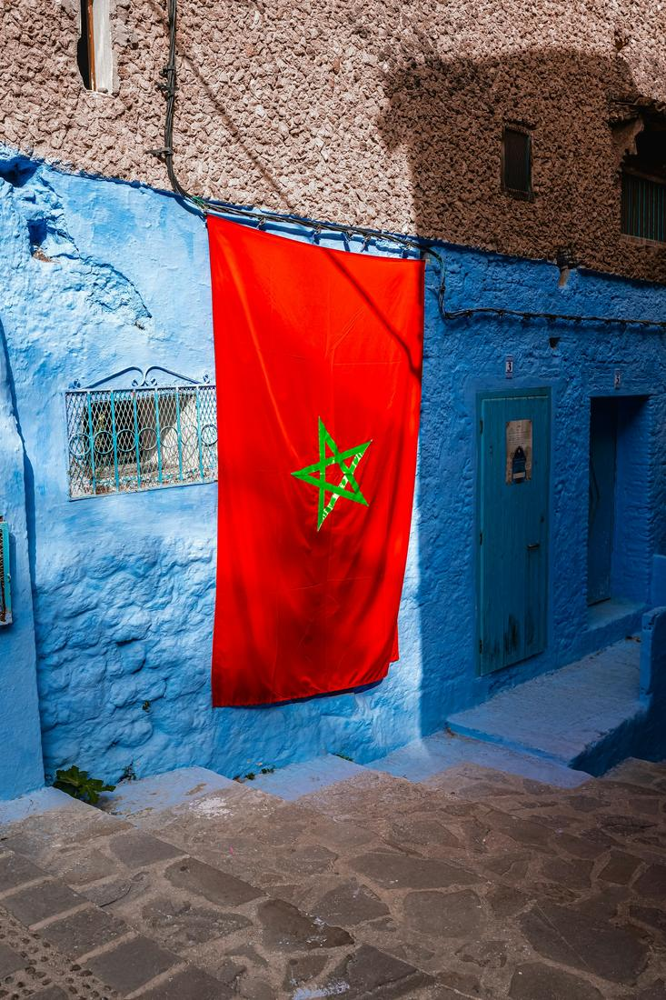

Bustling souks, endless dunes, and a city painted entirely blue — Morocco is a feast for every sense.
Morocco is one of those destinations that hits you the moment you step off the plane — the smell of spices and mint tea, the call to prayer echoing over rooftops, the sheer color of everything from the tiled riads to the dyed wool piled high in the souks. It's close enough to Europe for an easy add-on to a bigger trip, yet it feels like a completely different world once you're wandering the medina. As your travel advisor, I love sending clients here because it consistently exceeds expectations.
What makes Morocco so rewarding is the range packed into one country — cosmopolitan cities, snow-capped mountains, and the literal edge of the Sahara desert, all within a few hours' drive of each other. You can be haggling over leather goods in a 1,000-year-old medina in the morning and watching the sun set over sand dunes on a camel by evening. It photographs beautifully, it feeds you incredibly well, and it's genuinely welcoming to first-time visitors to North Africa.
The key is balancing city energy with quieter desert and mountain time so the trip doesn't feel like one long shopping trip — that's exactly the kind of pacing I build in. Here are 3 excursions I love arranging for travelers headed to Morocco.

Marrakech is where most of my Morocco itineraries begin, and this excursion captures why the city has such a hold on people. You'll wander the medina's maze of alleyways to Jemaa el-Fnaa, the massive main square that transforms from orange juice stalls and snake charmers by day into a sprawling, smoky, lantern-lit food market by night, all overlooked by the towering Koutoubia Mosque minaret. From there, I love routing travelers through the souks to shop for leather, lanterns, and spices, then on to the Bahia Palace, with its intricately carved cedar ceilings and tiled courtyards, and the Jardin Majorelle, a cobalt-blue garden of cacti and palms once owned by Yves Saint Laurent. To balance the city's intensity, I always like pairing a Marrakech day or two with a trip up into the Atlas Mountains, where Berber villages cling to terraced hillsides just an hour or so outside the city and the pace slows down completely. It's a gorgeous contrast — from the sensory overload of the medina to mountain air and mint tea with a Berber family — and it gives travelers a much fuller picture of Morocco than the city alone. This is a favorite for first-timers who want an immersive, photogenic introduction to the country.

This is the excursion I build for travelers who want to actually feel the scale of the Sahara, not just see a photo of it. The classic route heads out from Marrakech over the Tizi n'Tichka mountain pass, stopping at Ait Benhaddou, a stunning fortified kasbah of red clay buildings that's been featured in countless films and still looks like something out of another century. From there, the road continues toward Merzouga on the edge of the Erg Chebbi dunes, where the landscape shifts entirely into towering waves of golden sand. The highlight is the camel trek out into the dunes at sunset, riding in single file as the light turns the sand orange and pink, followed by a night at a desert camp under an incredible blanket of stars, often with live Berber music around the fire. Waking up for sunrise over the dunes before the trek back is one of those quiet, humbling moments that stays with people long after the trip ends. I typically build this as a multi-day loop from Marrakech, so there's time to properly enjoy Ait Benhaddou, the dunes, and the drive itself, which is spectacular in its own right.

For travelers who've already fallen in love with Morocco's medinas and want to go a little deeper, I love sending them north to Chefchaouen and Fes. Chefchaouen, tucked into the Rif Mountains, is famous for its old town painted almost entirely in shades of blue, from deep cobalt doorways to pale sky-blue stairwells — wandering its quiet, cat-filled alleyways feels like walking through a watercolor, and it's one of the most purely photogenic towns I book anywhere in the world. From there, the route continues to Fes, home to the largest car-free urban area on Earth and a medina so labyrinthine that most visitors need a local guide just to keep their bearings. This is where I send travelers who want a deep dive into traditional craft culture — the tanneries with their dye pits arranged like a painter's palette, metalworkers hammering brass in open-air workshops, and family-run textile stalls that have operated for generations. It's a slower, more soulful excursion than Marrakech's energy, ideal for travelers extending their trip northward or looking for a quieter, more historic side of Morocco.